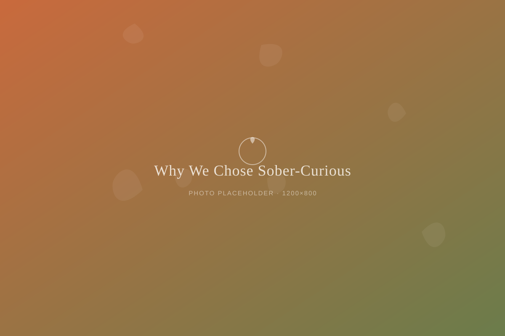

Community
Why We Chose Sober-Curious Over Sober

Two words, two very different nights
People ask us all the time if Vine & Sunset is "a sober bar." We usually pause before answering, because the honest answer is: sort of, and also not exactly. We don't serve alcohol, that part is true. But we didn't build this place only for people in recovery, or only for people who've quit drinking for good. We built it for anyone who wants a night out that doesn't run through alcohol at all — whatever their reason, or lack of one.
That's the difference between sober and sober-curious. Sober usually means someone has made a firm choice, often a hard-won one, not to drink. Sober-curious is looser. It might mean someone who drinks most weekends but wants a Tuesday off. It might mean someone who's just tired of hangovers, or someone who's simply never liked how alcohol makes them feel. Both belong at our bar. So does everyone in between.
Why the label matters
We could have called ourselves a sober bar and left it there. Plenty of great ones exist, and we admire them. But we noticed that word sometimes scared off exactly the people who needed a place like ours most: the ones who weren't sure they qualified. People who worried they'd be asked to explain themselves, or to justify why they were there if they weren't "sober enough."
Nobody should have to pass a test to sit at our bar. So we say sober-curious, because curiosity doesn't require a verdict. You can be curious for one night or for the rest of your life. You can be curious and still drink wine at your cousin's wedding next month. That's allowed. That's the whole idea.
What that looks like on a Friday night
Walk into Vine & Sunset on a Friday and you'll find people in recovery sitting next to people who just left happy hour somewhere else and wanted a second stop that felt calmer. You'll find pregnant regulars, teenagers with their parents, a physician on her night off, someone celebrating five years sober, someone just curious what a botanical old-fashioned tastes like. Nobody's glass gets a second look.
Our bartenders are trained not to ask why. Not "are you sober?" Not "is this a special occasion?" Just, "what sounds good tonight?" That question works the same for everyone, and that's exactly the point.
Come as you are, drink what you like
We think a lot about what makes a place feel like it's actually yours. Usually it's not the drink list. It's whether you can walk in without bracing for a question you don't want to answer. That's what we're after with sober-curious: a wide-open door, no explanation required.
We've also learned that language shapes who shows up. When people hear "sober bar," some assume they'd be intruding on someone else's hard-earned milestone. When they hear "sober-curious," more of them give themselves permission to just come see. Both spaces matter. We simply decided that ours would be the one where curiosity is enough of a reason on its own.
Whatever brought you here, sober, sober-curious, or just curious, there's a seat at our bar for you.